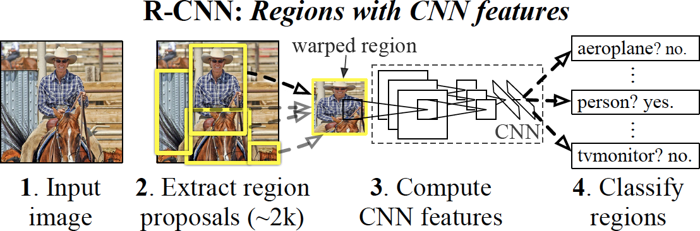
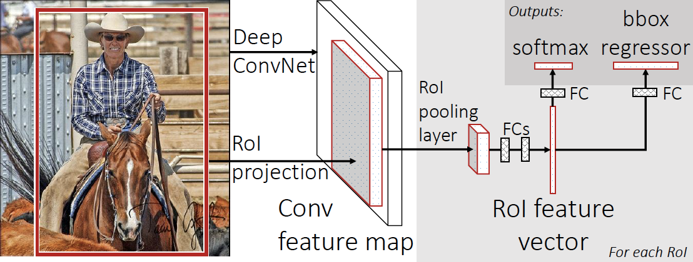
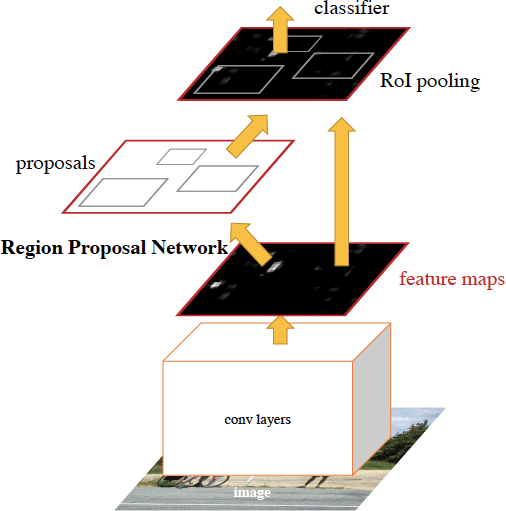
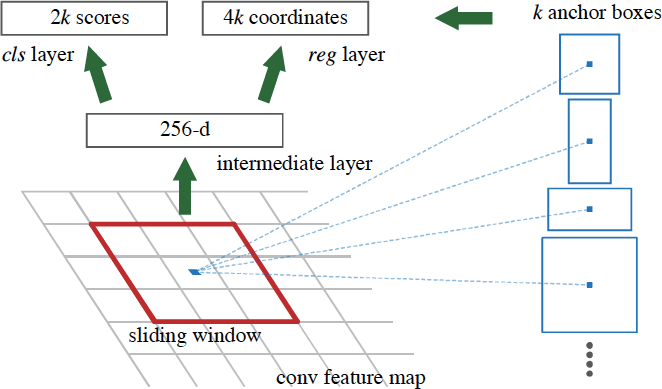

RCNN series
RCNN

Step 1: selective search for generating region proposals;
Step 2: AlexNet for features extraction;
Step 3: class-specific linear SVMs
performance:
drawbacks:
trainning is multi-stage pipeline;
trainning is expensive;
Object detection is slow (without sharing computation)
Fast-RCNN

Faster-RCNN


Reference:
[1] R. Girshick, J. Donahue, T. Darrell, and J. Malik, “Rich feature hierarchies for accurate object detection and semantic segmentation,” in IEEE Conference on Computer Vision and Pattern Recognition (CVPR), 2014.
[2] R. Girshick, “Fast R-CNN,” in IEEE International Conference on Computer Vision (ICCV), 2015.
[3] https://arxiv.org/abs/1506.01497
[4]
[5] https://medium.com/@fractaldle/guide-to-build-faster-rcnn-in-pytorch-95b10c273439